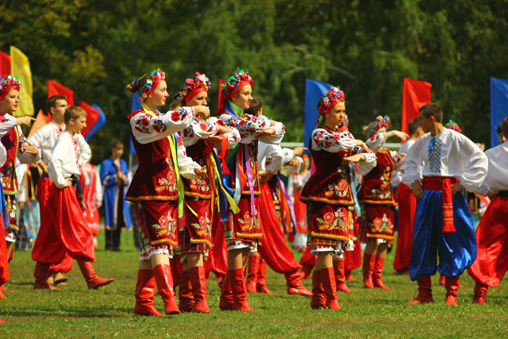
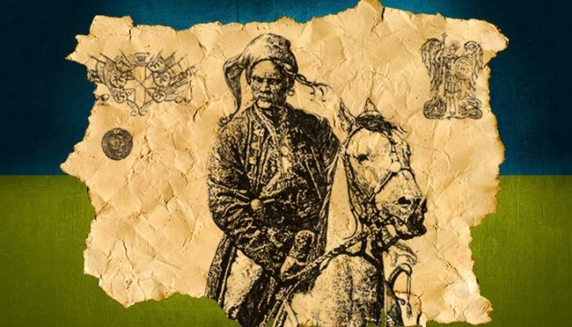

- Офіційна мова: українська
- Столиця: Київ
- Населення: 47 732 079
- Валюта: Гривня (UAN)
- Набуття незалежності: серпня, 1991
- Площа: 603 700 км2
Культура
Часто кажуть, що Україна розташована між Сходом та Заходом. Дійсно, українська культура – це яскраве поєднання культур різних народів, які проживали і проживають на території України. Саме це робить її такою цікавою.
Офіційний веб-сайт України Ukraine.ua розкаже вам про сучасний український театр, архітектуру, фотографію, літературу, музику, модні тенденції в одязі, візуальне мистецтво, кінематографію та графічний дизайн. На сайті ви можете знайти інформацію про майбутні культурні та спортивні події, фестивалі, а також список музеїв та галерей, які варто відвідати. Україні є що показати світові.
Історія
Україна – це держава зі славним та, водночас, трагічним минулим. Люди різних національностей долучилися до творення її історії. Також Україну формують спадщини різних держав, до яких вона колись входила, перш за все Австро-Угорщини, Російської імперії та Радянського Союзу.
Минуле України – це історія з багатьма голосами. Проєкти «Україна за 2 хвилини» та «10 речей, які кожен повинен знати про Україну» розповідають про культурне та етнічне різноманіття України, визначні історичні постаті (зокрема, українського поета Тараса Шевченка, письменника-модерніста Лесю Українку та кінорежисера Леся Курбаса) та основні історичні події.
Кухня

Українська кухня з її різноманітними смаками та технологіями приготування страв є важливою складовою культурної спадщини країни. Вона відображає особливості регіонів країни та кулінарну спадщину різних етнічних та національних спільнот України.
Щоб дізнатись більше про сучасну українську кухню, перегляньте книгу “УКРАЇНА. Їжа та історія“. Доступна українською та англійською мовами на веб-сайті Українського інституту, книга включає рецепти страв з усієї країни. Досліджуйте Україну, не залишаючи своєї кухні.